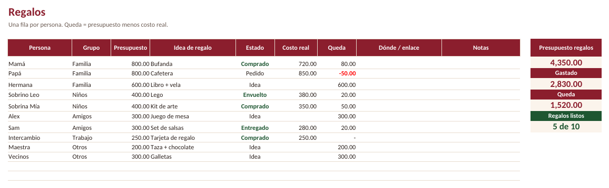

Lista de regalos de Navidad gratis y presupuesto navideño
Primero un total que puedas pagar sin endeudarte. Luego resta lo que no son regalos y reparte el resto entre tu lista. La calculadora hace las cuentas y te dice cuánto apartar cada semana hasta el 25 de diciembre. No se guarda nada.
Plantilla gratis: lista de regalos de Navidad
Una fila por persona: grupo, presupuesto, idea de regalo, estado (Idea, Pedido, Comprado, Envuelto, Entregado) y costo real. El cuadro de la derecha suma tu presupuesto de regalos, lo gastado, lo que queda y cuántos regalos ya tienes. Sirve también para el intercambio de regalos del trabajo.
Descargar la lista de regalos (.xlsx)Excel y Google Sheets. Totales revisados en LibreOffice. Sin correo ni registro.

Para el resto del año
Si en enero quieres llevar todos tus gastos, hay una plantilla de presupuesto 2027 gratis. La versión completa (5 USD) reparte las compras a meses sin intereses en los meses que pagas, algo que pesa mucho después de Navidad y el Buen Fin.
Ver el Presupuesto 2027 con meses sin intereses (5 USD) →Tres hábitos para no pasarte en Navidad
- Decide el total primero. Si lo que toca por persona se ve muy poco, acorta la lista o cambia algunos regalos por un plan juntos antes de comprar.
- Cuenta lo que no son regalos. La cena, los viajes, las envolturas y el intercambio del trabajo se olvidan fácil y suman mucho.
- Aparta dinero cada semana. Una cantidad fija cada quincena pesa menos que un golpe en diciembre y deja menos a meses para enero.
Relacionado
- Sorteo de intercambio de regalos gratis
- Calculadora de presupuesto con meses sin intereses
- Cómo ahorrar dinero aunque ganes poco
- English: Christmas budget planner
Calculadora de aguinaldo 2026 (México): cuánto te toca y cuánto está exento de ISR.